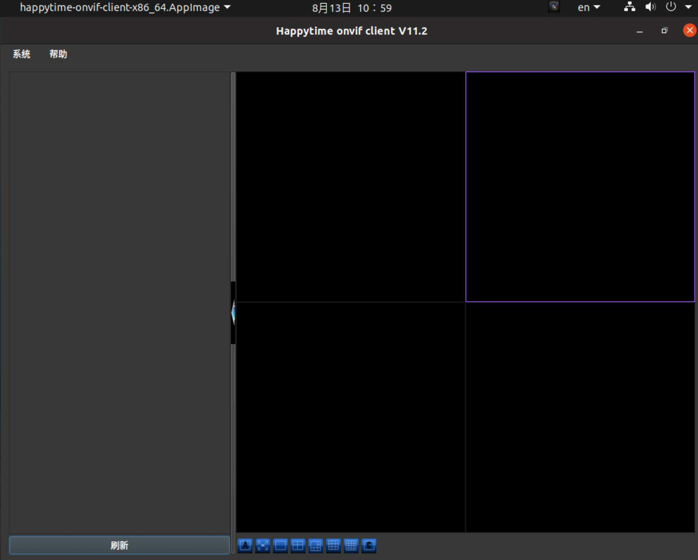
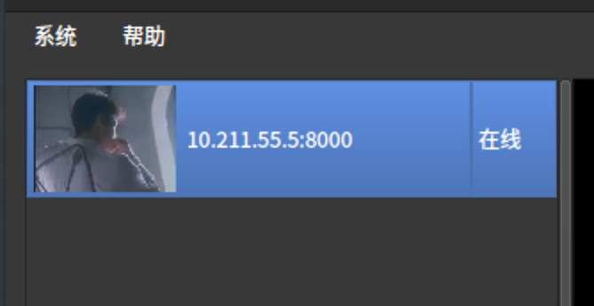
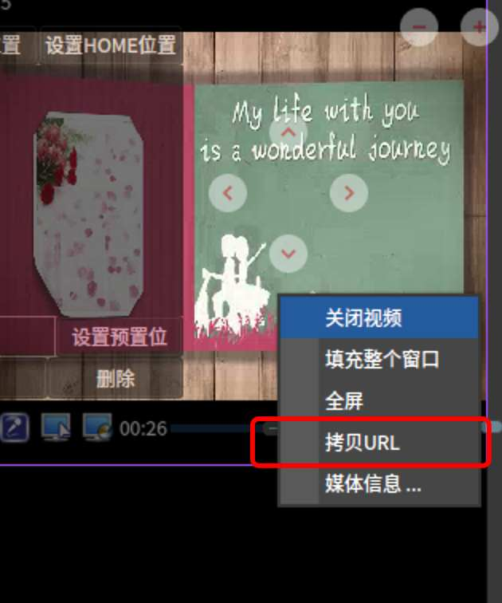
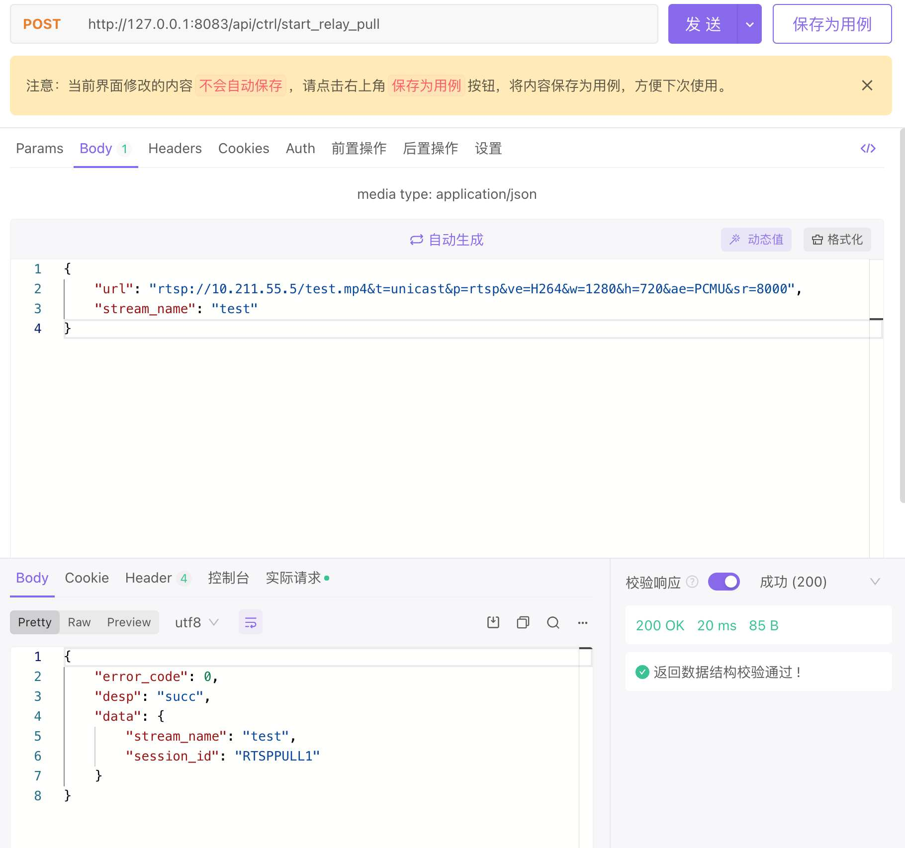
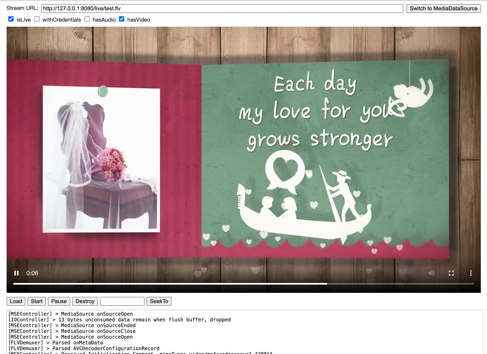

从监控摄像头拿视频流
- 作者:
- 淡白
- 创建时间：
- 2022-08-13 10:08:28
- lal rtsp flv onvif
摘要：本文介绍了使用ONVIF协议连接摄像头获取RTSP流地址，并使用lal流媒体服务器播放。主要步骤包括使用ONVIF Client工具连接摄像头获取RTSP流地址，然后将流地址添加到lal流媒体服务器，并通过API获取播放地址进行播放。如果遇到无法播放的情况，可以尝试更换视频编码为H.264或检查音频编码是否支持。
首先了解两个相关协议
onvif
ONVIF是一个开放的安防行业组织，致力于为安防行业提供和促进标准化开放接口，
以实现IP网络安防产品的有效互操作性。
官网
RTSP
实时流协议（Real Time Streaming Protocol，RTSP）是一种网络应用协议，专为娱乐和通信系统的使用，以控制流媒体服务器。该协议用于创建和控制终端之间的媒体会话。媒体服务器的客户端发布VCR命令，例如播放，录制和暂停，以便于实时控制从服务器到客户端（视频点播）或从客户端到服务器（语音录音）的媒体流。
流数据本身的传输不是RTSP的任务。大多数RTSP服务器使用实时传输协议（RTP）和实时传输控制协议（RTCP）结合媒体流传输。然而，一些供应商实现专有传输协议。例如，RealNetworks公司的RTSP服务器软件也使用RealNetworks的专有实时数据传输（RDT）。
RTSP由RealNetworks公司，Netscape公司和哥伦比亚大学开发，第一稿于1996年提交给IETF。由互联网工程任务组（IETF）的多方多媒体会话控制工作组（MMUSIC WG）进行了标准化，并于1998年发布为RFC 2326。 RTSP 2.0 于2016年发布为RFC 7826，作为RTSP 1.0的替代品。RTSP 2.0基于RTSP 1.0，但除了基本的版本协商机制之外不向后兼容。
用到的一些网站
主要流程
通过onvif协议连接登陆摄像头，这样就可以设置一些音视频参数和查看rtsp流地址。
部署lal流媒体服务器，调用 lal API接口拉取rtsp流，用户再从 lal 拉取所需的播放格式。
需要条件
-
服务器能访问到摄像头ip
-
摄像头支持rtsp、rtmp等视频流
使用ONVIF Client连接摄像头 拿到rtsp流地址
运行工具如下：

左栏右击，添加摄像头。默认如果在一个网段下是会直接扫描出来的。

设置它的登陆信息。可能的默认密码 admin
认证后双击会出现在右侧播放。

复制url，这就是rtsp流地址。
添加流地址到lal流媒体服务器
根据官方文档或者拉下源代码运行服务器
我以源代码运行默认api端口是8083
访问http://127.0.0.1:8083/api/stat/all_group
返回
{
"error_code": 0,
"desp": "succ",
"data": {
"groups": null
}
}
通过接口添加流地址

再访问http://127.0.0.1:8083/api/stat/all_group
{
"error_code": 0,
"desp": "succ",
"data": {
"groups": [
{
"stream_name": "test",
"audio_codec": "",
"video_codec": "H264",
"video_width": 1280,
"video_height": 720,
"pub": {
"session_id": "",
"protocol": "",
"base_type": "",
"start_time": "",
"remote_addr": "",
"read_bytes_sum": 0,
"wrote_bytes_sum": 0,
"bitrate": 0,
"read_bitrate": 0,
"write_bitrate": 0
},
"subs": null,
"pull": {
"session_id": "RTSPPULL1",
"protocol": "RTSP",
"base_type": "PULL",
"start_time": "2022-08-13 11:15:33.226",
"remote_addr": "10.211.55.5:554",
"read_bytes_sum": 1552868,
"wrote_bytes_sum": 0,
"bitrate": 866,
"read_bitrate": 866,
"write_bitrate": 0
}
}
]
}
}
播放
根据需要从下面个地址获取播放地址
lalserver 各协议推拉流url地址列表
通过flv.js 播放http-flv

鉴权
通过通知和api调用来达到自定义鉴权
通知事件
其他情况
如果遇到无法播放的情况可以看下视频编码是不是h265 尝试更换为h264
或者音频编码是不支持的